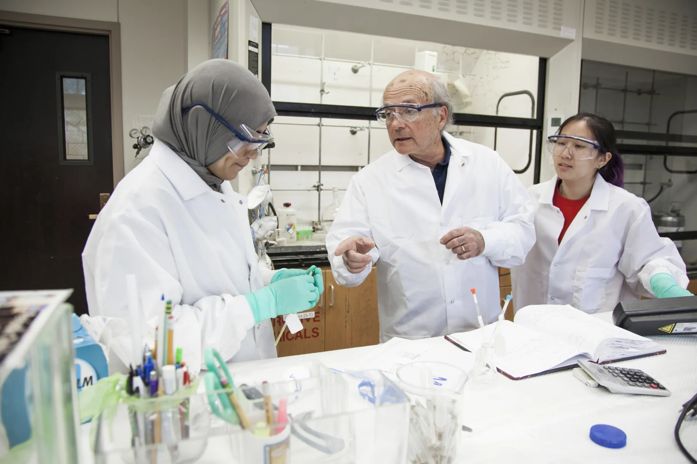

04
Opportunities
PhD students
There are currently no PhD opportunities available, news is posted here.
Postdocs
There are currently no Postdoc opportunities available, news is posted here.
Undergraduates
Reach out for any questions concerning capstone allocation or project ideas.
Collaborators
We are always open to working with new collaborators and encourage getting in touch with an informal email.
Get in touch
- Email clt81@bath.ac.uk
- Post Department of Life Sciences, University of Bath, Claverton Down, Bath BA2 7AY, United Kingdom
- LinkedIn Catherine Tooke
- Find us online Bath research portal